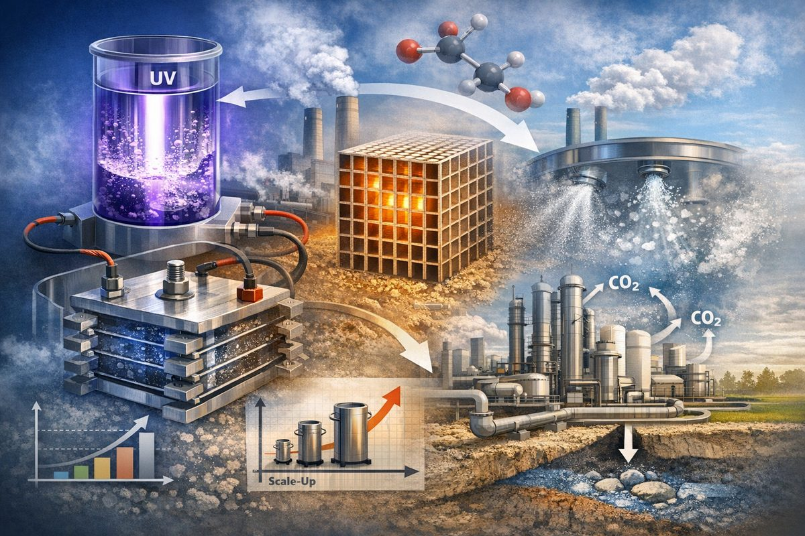

1. Process intensification in energy and CCUS
Research on intensified reactors and structured systems for energy and carbon-related applications, with emphasis on reactor design, scale-up, and performance improvement.
- Photochemical and electrochemical reactor design
- Structure-domain intensification using aerosols, monoliths, and related architectures
- CCUS-oriented process and reactor concepts
- Transport, scale-up, and structure–performance relationships